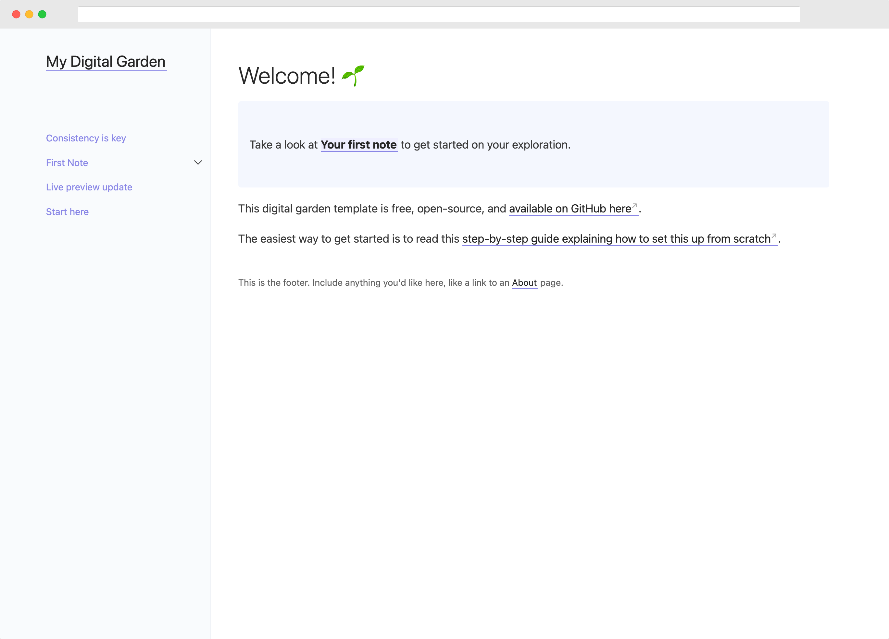

Site Configuration
Table of Contents
- Basic Information
- Configuration
- A Pile of Unorganized Reminders and Notes
- Custom Plugins
- Current Workflow
- To-Dos
Basic Information
This site is created using the static site generator Jekyll, modified from the Jekyll Digital Garden Theme, inspired by the Obsidian Help Page and the Jekyll Just the Docs theme. Visit the site repository here.

This will be where I put down my random thoughts and notes on the online courses I stroll through from time to time. This site is hosted through GitHub Pages and GitHub Actions. Due to Github not being compatible with Jekyll sites that have custom plugins, the site is pushed onto the master branch on Github but built through a workflow to the gh-pages branch as static html, css, and javascript files. The GitHub pages are built from that branch as opposed to the usual master branch.
A lot of customization went into building the website, and I’ll try my best to sort through and document everything for one day if my future self wants to come back.
Running the Site Locally
If you have Ruby and Bundler installed, running the site is as simple as running the following commands.
bundle install
bundle exec jekyll serve
InfoFor a more detailed tutorial on running Jekyll sites locally, visit the official Github Pages Documentation here.
Pushing to GitHub
Every time a push/commit is performed, a Github workflow will be triggered, which builds the site at the directory set by the destination attribute in _config.yml. The destination attribute must be set to ./build, or the GitHub workflow will not work. Everything in ./build is then pushed to a separate branch, gh-pages, the branch from GitHub Pages that will deploy the site.
For future reference, the GitHub workflow can be found here.
GitHub Actions uses YAML syntax to define the workflow. Each workflow is stored as a separate YAML file in your code repository in a directory named .github/workflows.
You can create an example workflow in your repository that automatically triggers a series of commands whenever code is pushed. The following workflow, which is the one that this website uses, builds a Jekyll site from the current branch and pushes it to another branch which can be deployed via GitHub Pages.
# .github/workflows/main.yml
name: jekyll-deploy-gh-pages
on: [push]
jobs:
build_and_deploy:
runs-on: ubuntu-latest
steps:
- uses: actions/checkout@v1
- name: Build & Deploy to GitHub Pages
env:
GITHUB_TOKEN: ${{ secrets.GITHUB_TOKEN }}
GITHUB_REPOSITORY: ${{ secrets.GITHUB_REPOSITORY }}
GITHUB_ACTOR: ${{ secrets.GITHUB_ACTOR }}
uses: andyw-0612/jekyll-deploy-gh-pages@master
Configuration
Global site settings are configured in _config.yml.
Behavioral Configuration
use_html_extension: if you use a static host that doesn’t support URLs that don’t end with .html (such as Neocities), try changing the use_html_extension value to true in the _config.yml file and restart the Jekyll server (or re-build the site). This adds a .html extension to note URLs and may resolve issues with links.
open_external_links_in_new_tab: when set to true, external links open in new tabs. Set to false to open all links in the current tab.
embed_tweets: when set to true, tweet URLs on their own lines will be replaced with a Twitter embed. The default value is false.
A Pile of Unorganized Reminders and Notes
-
To use the
rawtag to display liquid syntax for inline code, therawandendrawtags must be outside of the backticks which enclose the inline code block -
To embed math, wrap math stuff with single dollar signs $for \space inline \space math$ and double dollar signs for block math.
$$ \int\limits_{0}^{1} \int\limits_{0}^{1} \int\limits_{0}^{1} xyz , dx , dy , dz $$ -
Refer to 2022-12-22 for information on the title front matter.
-
Internal links to another note can be written with the
[[Double Bracket]]link syntax or the plain old[markdown style](path/to/note). -
Wikilinks point directly to the note’s
titleattribute in the front matter. Currently, using the relative path to the notes is not supported. -
Liquid
{% highlight %}will not work as one of the plugins that I wrote complies markdown files through the official Liquid library, which does not support the highlight tag, a custom feature implemented by Jekyll. -
Images can be embedded using the
![[Obsidian.png]]syntax or the plain old. HTMLimgtags only work with images linked through URLs in Obsidian. -
Although for image embeds, Obsidian supports configuring the height and width properties of the image by using a pipe operator as such
![[image.png|height x width]], the Jekyll website cannot do so. Additionally, setting explicit height and width values makes the image incompatible with mobile devices due to the difference in screen ratio. -
It is possible to configure a description for each note by enclosing the text between HTML
headertags at the top of the note. This description will be displayed as lighter-colored text under the note heading. -
To create a parent page with child pages, add the following line to the front matter of parent pages:
--- title: Note Title has_children: true ---On child pages, set the front matter attribute
has_parentto their respective parent page’stitle. Remember, thehas_parentattribute must point to the parent page’stitle, not the file name! -
At the end of every parent page, there will be an automatically generated table of content listing its child pages. Currently, there is no way of disabling it.
-
Although not required, it is preferred to create a separate directory within
/_notesto store the parent page along with its child pages. -
Kramdown, the markdown version that Jekyll uses, can generate an automatic table of contents for the headings in every note by placing the following lines at the start of every note (After
headertags, if any).## Table of Contents {:.no_toc .toc-heading} 1. {:toc} -
Visit Obsidian’s official documentation for help on markdown syntax and everything else related to Obsidian.
WarningCallouts will not show up on the website unless there’s at least a line below it (blank or not, it does not matter)
The custom Jekyll plugin I wrote for callouts needs some tweaking and debugging
Custom Plugins
Information and notes about the custom plugins I wrote for this site in Ruby.
Order of Plugins
Both _plugins/obsidian_embeds.rb and _plugins/bidirectional_link_generator.rb has a priority flag set to low and lowest, respectively.
obsidian_embeds must run after all plugins except bidirectional_link_generator since obsidian_embeds convert the markdown content to HTML code. The bidirectional_link_generator plugin parses HTML content, while all other plugins directly parse the markdown content.
Current Workflow
Obsidian is used for note-taking with the _notes directory as the Obsidian vault. Images and media for notes are stored in _notes/notes-media. Visual Studio Code is used to add, commit, and push changes to the remote repository on GitHub. GitHub will automatically deploy the updated changes through GitHub Actions to GitHub Pages at andyw-0612.github.io.
To-Dos
- Implement heading anchor links; an example can be found here.
- Implement support for markdown task lists.
- Revamp side navigation based on file structures instead of front matters.
- Revise the callout logic to be similar to the way in which Wikilinks and image embeds are parsed so that callouts within fenced code blocks will not be processed.
- Customize callouts.
- Embed Notes.
- Write an explanation/documentation explaining the custom plugins I wrote, which were not originally included in the Digital Garden template.
- Add a markdown reference note as a child note of this note.
- Implement a site-wide search functionality using
lunar.js.
This line appears after every note.
Lost? Go back to the homepage?
Notes mentioning this note
There are no notes linking to this note.